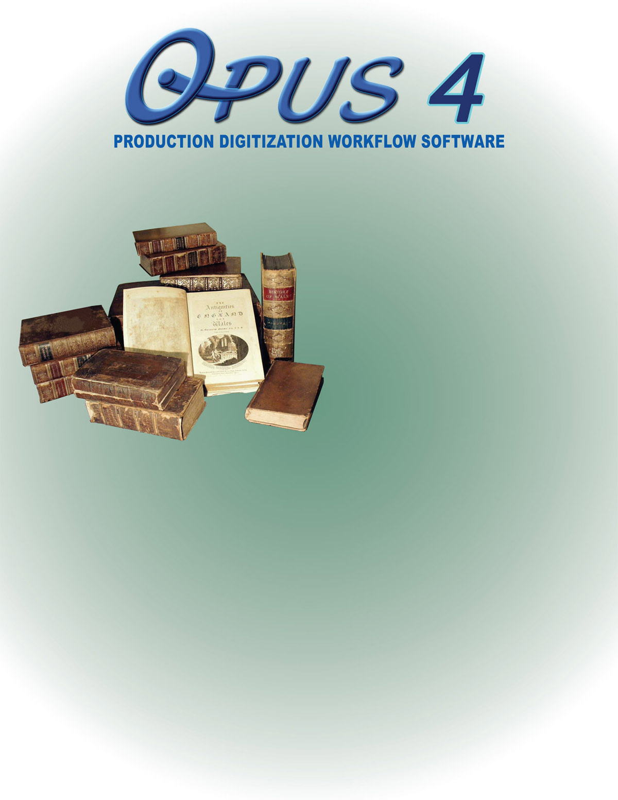
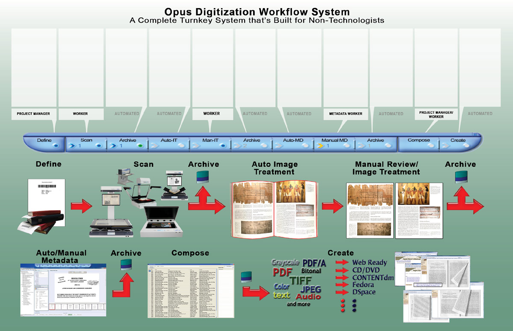
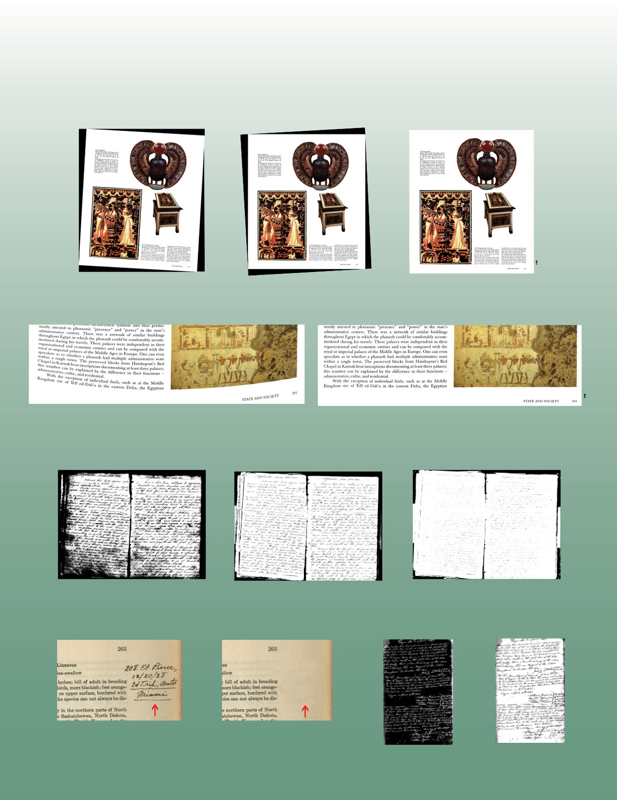
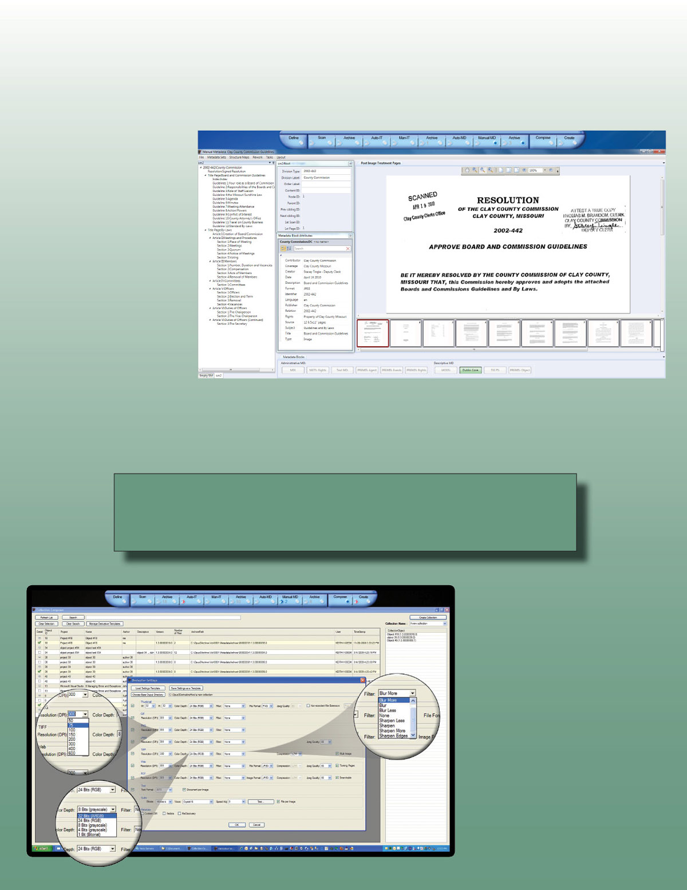
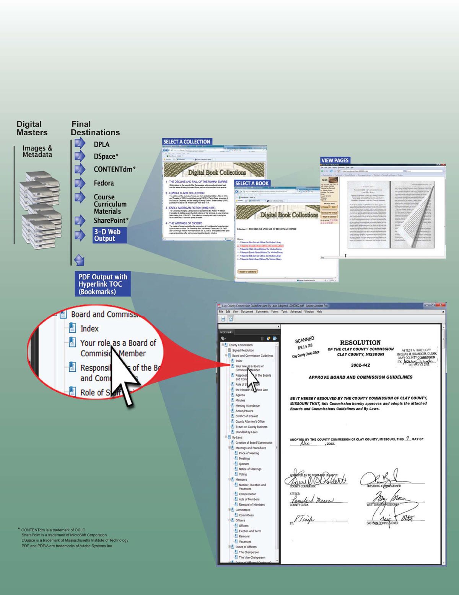

OPUS WorkFlow Systems
WF-01
One Product ...
8 Exceptional Advancements
- Superior Image Treatment ...
Designed for Projects and Archival - Fully Integrated Hierarchical
Metadata Capture - Next Generation Workflow
with Automatic Archive - Open RAID Digital Archiving & Migration
Management Software using Automated
Data Migration Facility - Customizable output formats including Web
with virtual 3D page turning - Enlightened Architecture
- Supported by experienced digital experts
- Creation of large amounts of derivatives
unattended (e.g. overnight)
A New Era in Digitization
Get into the game with Opus! Long have the complexity and high startup and operating costs of digitization projects kept most libraries, museums and archives on the sidelines. Opus leverages today's highperformance, low-cost computers to obliterate those barriers with its paint-by-numbers digitization system that produces the highest quality digital collections possible at less than 1/3 historic startup and operating costs. In as little as one day, Digital Library Systems Group (DLSG) installation and training staff will leave you with a fully operational digitization system. Followon training sessions via the Web ensure that your staff is producing multiple beautiful digital books per day in no time, complete with hierarchical metadata.
With the new low prices and high-performance of the latest book scanning hardware, complete digitization labs are surprisingly affordable.
The digital archives that Opus creates can be accessed without proprietary software. Using its Compose Collection and Create Collection capabilities, Opus can create an unlimited number of digital collections in nearly unlimited formats (derivatives) any time in the future. Simply select the desired volumes and data formats and let Opus create your collection(s) unattended overnight.
Opus' automated data migration facility makes it easy to transfer multiple copies of your digital archive to new media every three to five years, ensuring that no data is ever lost. In addition, during data migration, Opus will automatically convert from outdated data formats to any new standards that might emerge in the future.
WF-02
Define
The Define stage locks object-level metadata to each volume prior to scanning via a barcoded tracking sheet that is kept with the volume. The scan operator simply scans the tracking sheet, then the volume. Metadata templates can also be selected in this stage.
Scan
The Scan stage supports virtually every type of scanner at the highest quality possible, including ultra-large scanners that produce ultralarge, multi-gigabyte images.
Raw Archive
The first Opus Archive stage automatically archives raw, unmodified images prior to any image treatment. Image treatment can be performed at any time in the future with different parameters and new algorithms.
Auto IT
The Automatic Image treatment stage can determine book skew, create consistent margins, eliminate book curve, fan and gutter, and smooth backgrounds. Opus Image treatment functions are not limited by file size.
Manual IT
The Manual Image treatment stage provides for careful, quick review of each image for scan quality and autoimage treatment results. Bad scans are flagged for rescan, and image treatment problems are corrected with its very easy, efficient graphical interface.
Treated Image Archive
The second Opus Archive stage automatically archives images treated by the prior two stages. Multiple versions of treated images can be maintained.
Auto Metadata Capture
The Automatic metadata capture stage captures metadata that was specified in the metadata template, stores it in a nonproprietary XML format and passes it to the Manual Metadata Entry stage.
Manual Metadata Entry
This stage provides an intuitive hierarchical graphical interface for entering the metadata specified in the object's template, from object level to page and sub-page level, with an unlimited number of elements at each hierarchical level.
Metadata Archive
The third and final Opus Archive stage automatically archives the captured and keyed metadata in a non-proprietary format. Whenever objects are output by the Compose and Create stages, the metadata is transformed to the desired output format.
Compose
The Compose stage allows unlimited numbers of digital collections to be exported repeatedly with different image and metadata specifications. Each digital collection can include any number of objects from the archive. Format, size, clarity and metadata can vary widely.
Create
This stage provides unattended output of entire digital collections comprising many volumes. Since image resizing, etc. can be very time intensive, this stage can be performed overnight.
WF-03
Elements of Opus
Workflow Manager
Opus Workflow Manager completely manages all objects throughout the entire digitization process while allowing third party software to be used where desired; provides tools for monitoring all objects as they move through the digitization workflow system to make managing projects and scheduling workers a breeze; and minimizes the cost of rework, whether it be skipped or improperly performed work, or even a change in the fundamental rules governing a digitization project.
Automatic and Manual Image Treatment
Opus completely automates the Image Treatment processes by separating two-up images, removing bookfold distortion, fan, gutter, and skew; all in a single operation. Opus also provides a streamlined graphical interface to manually perform the specialized image treatment functions required for both digital preservation and the various types of access.
Integrated Hierarchical Metadata Capture
Opus' Metadata Capture stages are not part of any digital collection viewing software, but instead are built seamlessly into the Opus digitization workflow system. The Opus Metadata Capture stages allow users to select from a list of standard hierarchical metadata templates, create new ones and restrict users to a subset of templates for a given project. The templates include metadata characteristics like requiring certain metadata to be captured, allowing some types of metadata to be repeated and requiring a single value for other types.
State-of-the-Art Customizable Output Derivatives and Formats
Opus' Create Collection stage provides output that
can be imported into open source and proprietary content management and digital library systems. Storage and internet bandwidth requirements rise as image quality rises. Opus lets the user select the ideal compromise for each access system that collections are deployed to. If requirements change, simply output the collection again with different clarity parameters.
Automated Archival
Opus adheres to the Open RAID standard. During the digitization process, there are three points at which archival is necessary: 1) archival of images immediately after scanning and before image treatment is performed; 2) archival of images after image
treatment has been performed; and 3) archival of metadata after metadata has been captured. Opus creates archives that are open architecture in formats that are accessible by today's communities of users, and with the proper data migration plan, will be accessible by its future communities of users.
Data Migration Facility
Opus provides an Archive Management and Data Migration facility which is intended to be run periodically, before the possibility of any media-related data loss becomes significant and before the media or data formats become obsolete. Opus' data migration facility runs unattended. While moving the data to new media, it can convert images and/or metadata from its existing standardized formats to new standardized formats, ensuring that data is never lost and is always in a format that is accessible by its community of users.
Digital Collection Web Site Creator
Opus provides Web-ready output that allows viewers to select a volume, open it and navigate from section to section and from page to page. A lifelike 3-D virtual page turning experience is provided as well. Opus creates the image files, downloadable PDFs, HTML, etc. including an entry point file called default. html and places them in a folder. To deploy a Web-ready digital collection, simply place the contents of the folder created by Opus on a Web site server and link the default.html file to an existing Web page. A thousand-book collection can be deployed in little more than the time it takes to copy the data.
Enlightened Architecture
The Opus architecture originates from a clear understanding of the core purposes of each element of digitization and access systems. In the book publishing business, rarely are books manufactured in the stores that sell them. Not only is manufacturing separate from retail, but distributors exist to attend to the specific needs of each of their stores while providing a simple, consolidated relationship with book manufacturers. In some cases, distributors provide warehousing services and in other cases, product warehousing is performed by the manufacturer. Opus serves as the manufacturer, warehouse and distributor.
Highlights
- Controls scanners and groups images into objects
- Automatically archives raw scanned images
- Automatically separates two-up images, removes bookfold
distortion, fan, gutter, skew and other undesirable artifacts of
digitization - Allows manual review and adjustment of automatic image
treatment results - Supports third-party image editing software (e.g. Photoshop)
- Automatically archives treated images
- Automatically captures hierarchical metadata
- Allows manual review, adjustment of automatically captured
hierarchical metadata and manual keying of additional
hierarchical metadata - Automatically archives hierarchical metadata
- Unlimited numbers of archive volume storage units
- Automates data migration
- Data Migration to new formats as they evolve
- Allows an unlimited number of collections to be composed from
an archive
- Outputs an unlimited variety of image and metadata derivatives
in a wide variety of formats - Creates complete, ready-to-go digital library Web sites with
virtual 3-D page turning - Displays real-time workflow status changes
- Provides easy, real-time tracking of objects as they are
processed through the workflow - Supports multiple predefined as well as custom image
treatment templates - Supports multiple predefined as well as custom metadata
capture templates - Supports multiple workflow workstations
- Allows for multiple metadata capture sets to be collected for
each object - Allows for the reprocessing of objects under new or different
image treatment algorithms without requiring the object to be
rescanned
WF-04
Opus Image Treatment
Opus takes the tedium out of image treatment by providing users with an interface that is wholly dedicated to processing images for archive, preservation and access. Even problem images can be fully processed in seconds. Prior to manually reviewing and adjusting images, Opus performs image treatment functions automatically. If any automatic image treatment function requires additional adjustment, Opus allows the user to graphically 'assist' Opus and make adjustments in seconds.
Skewed
Skew Corrected
Cropped Image
Automatic image treatment removes skew, adjusts the border, and eliminates fan and gutter. The treated image may be further refined by manual treatment.
Book Curvature
Book Curvature Corrected
Book curvature produced from scanning tightly bound books may be realigned using Opus' sophisticated book curve correction tool. Text and photos are returned to their original alignment and orientation.
Too Dark
Just Right
Too Light
Opus allows for the output of a large variety of derivatives. Controlling threshhold optimizes the clarity for each type of derivative which, in turn, produces the highest quality image for that output request.
Unwanted Artifact
Artifact Removed
Photostat
Inverted Photostat
Artifacts of all types may be removed from an image while retaining the underlying variations in shading. Fingers, blemishes, stains or even handwritten notes may all be removed to produce an image that closely resembles the original. Opus enables you to publish both the treated and untreated image.
Photostats and negatives are easily inverted revealing an otherwise unreadable document.
WF-05
Opus Hierarchical Metadata Capture
Opus' hierarchical metadata capture is controlled by templates that can be created and modified to fit virtually any requirements. Input field characteristics include: required/optional, repeatable/one occurrence only and other characteristics that can be specified when templates are constructed or modified. Opus provides several generic templates to capture the data necessary to create virtual library output formats.
Opus provides a straightforward graphical interface for creating and modifying hierarchical templates. The templates carry the characteristics of XML elements and attributes. Data entry rules such as required/optional and single/multiple can be assigned to each field. During metadata capture and entry, Opus enforces the rules, thus simplifying metadata entry and reducing the possibility of errors.
In addition, the Opus hierarchical metadata input facility allows a user to scroll back and forth through the images of an object (e.g. pages of a book) while reviewing and entering metadata.
Opus Collection Composer
The first nine stages of Opus create normalized digital masters.
The Opus Compose Collection facility withdraws objects from
the stored normalized digital masters and publishes them to
their final destination(s).
Composing collections couldn't be easier. Select the digital volumes that comprise the desired digital collection in minutes with Opus Collection Composer. Simply name the collection and begin adding objects by browsing the digital archives managed by Opus. A simple click of the mouse adds a volume to the collection.
Digital archives are reusable assets, especially when managed by Opus. Once you have created your archive, you can use it anytime to compose and automatically create new and different collections, course curriculum materials, etc. Online digital content and print-on-demand add to the many digital formats.
WF-06
Opus Output: Image Derivatives & Metadata
Opus has a library of script files for common XML, flat file and other output formats for the metadata and associated images of digital objects (e.g. METS, MODS, Dublin Core). This script library is expandable with an unlimited number of custom formats. In addition to selecting the desired output format(s) for the metadata, the clarity and output formats of the images can be specified (e.g. TIFF,JPEG, PDF, PNG, etc.).
DLSG staff technicians can assist in modifying existing formats and creating new custom output formats.
The most exciting and immediately usable format that Opus creates is a Web-ready output that provides the experience of browsing the virtual stacks, selecting a digital book, opening it and turning the pages; as though the printed book were in front of you.
One of Opus' most popular file format
outputs of the images is PDF and
PDF/A. Opus Image Treatment function
publishes PDF images with consistent
sizes. When coupled with Opus metadata
output the PDF is presented with bookmarks
hyperlinked to the section within the images,
making content search extraordinarily easy.
Opus' OCR function adds full text search
giving the user the ultimate search tool.